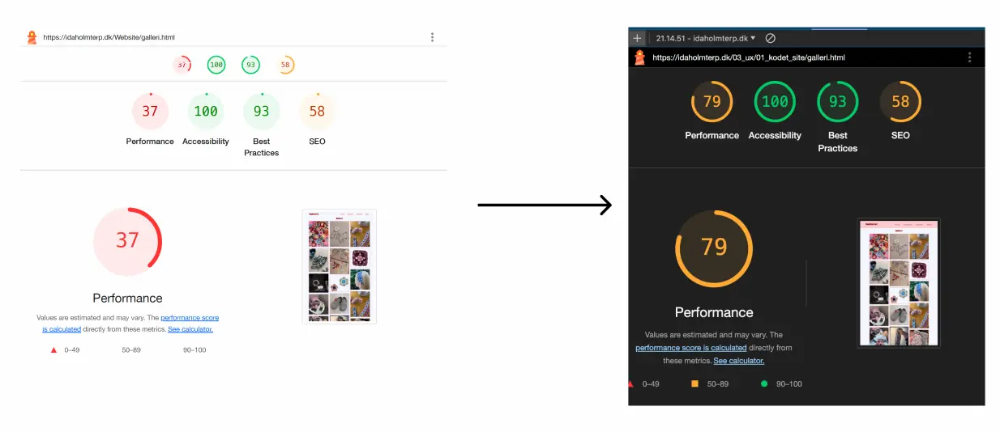
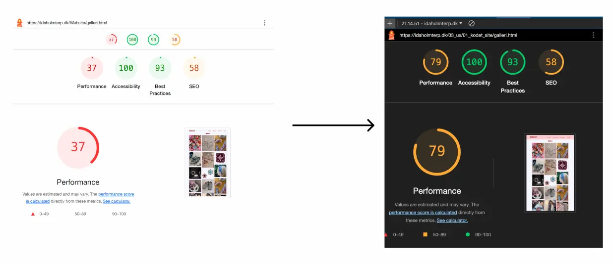

Emnesite
I Tema 3 blev vi introduceret til User Experience Design (UX), som er en central del af udviklingen af digitale brugergrænseflader (UI). Dette tema gav en grundlæggende forståelse for samspillet mellem brugere og brugergrænseflader og introducerede teorier, værktøjer og metoder til research, design og test i digital produktudvikling.
I emnesite opgaven var vores mål at lave et fuldendt website, hvor vi var med gennem hele processen. Opgaven havde til formål at give erfaring med udvalgte UX/UI-metoder og lære at præsentere vores design- og udviklingsproces samt formidle research- og testresultater til interessenter.
Metode
I starten af processen for emnesitet gik jeg igang med idégenering som tog form af en brainstorm for emnet på sitete. Her valgte jeg emnet hækle. For at finde udtrykket og stilen for sitet lavede jeg moodboards og styletile.
Efter at havde lavet research, lavede jeg en digital klikbar prototype for at se hvordan sitet ville udforme sig. Digital prototype har jeg brugt igen i Tema 5.

Udfra min digitale prototype begyndte jeg at kode mit site med HTML og CSS. Html for at lave strukturen i sitet og css for at style og lave layout. Ny css jeg lærte i dette tema var at implementere fonte og at lave et dynamisk galleri, hvor billederne blender sammen frem for at blive inde for grid linjerne.
En del af dette tema var test. Hvor vi blandt andet lavede 5 sekunders test, tænkehøjt test og eksperttest. Billede 3 viser min lighthouse test, hvor jeg fokuserede på at få min preformence bedre. Dette gjorde jeg ved at optimere mit galleri, som indeholdee mange store billeder, ved at gøre dem mindre. I de senere opgaver har jeg også konveteret billederne til WebP, for at gøre billederne mindre tungt og optimere indlæsningstiden.
 

Se det færdige produkt her:
EmnesiteNye kompenancer
- Figma
- Idégenering
- Design
- UX og UI
- Bruger test